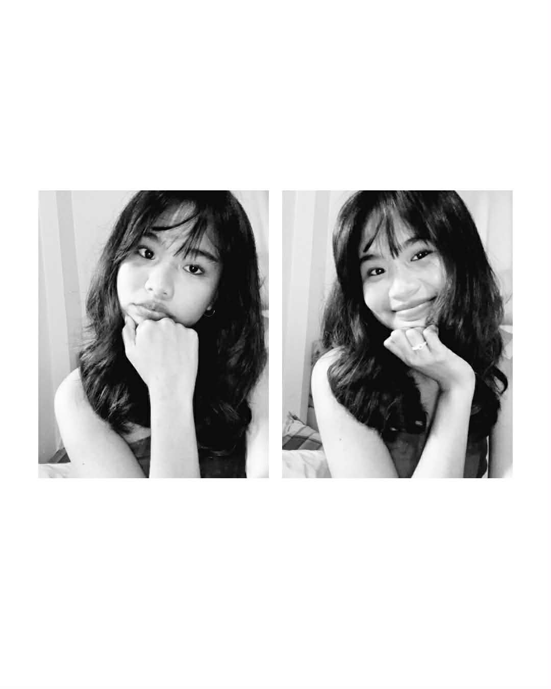

about me
Hello, I am Sue Zanne —
Hello! My name is Sue Zanne U. Graycochea, and I am an IT student with a strong passion for creativity and self-expression. Ever since I was young, I have always loved drawing and exploring different forms of art, which became one of the biggest inspirations behind my interest in design. Because of this, I dream of becoming a graphic designer someday if given the opportunity, where I can combine my creativity with the skills and knowledge I am gaining in the field of technology.
As a student, my main goal is to finish my studies successfully and build a stable career in the future. I want to continue improving my skills, learning new things, and becoming someone who can create meaningful work through both technology and design. Someday, I also hope to travel around the world, explore different places and cultures, and experience new things that will help me grow both personally and professionally.